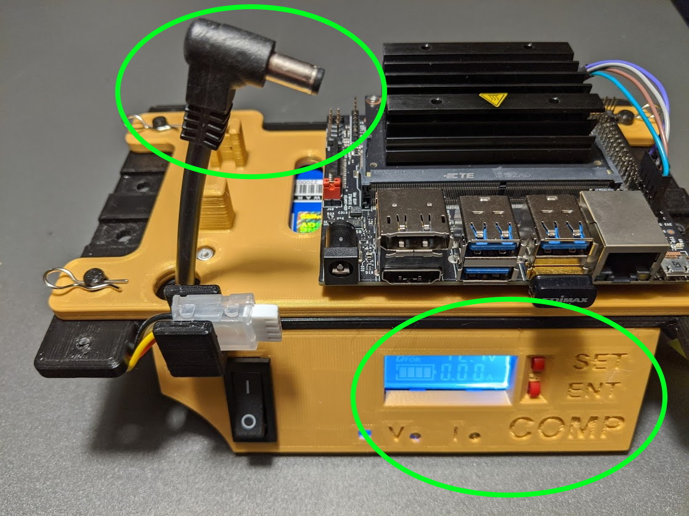

Voltage Regulator
The voltage regulator takes the processor battery input (nominally 11.1V), drops it down to 5V for drive the processor. This is a high efficiency convertor (around 98%) so minimal power is lost during this process.
Testing
The regulator has been adjusted to appropriate levels before shipping. This test uses the display readout to check the output voltage level. This check is to insure proper levels after shipping before before applying power to the processor.
- Unplug 5V power cable on the processor (should already be unplugged).
- Turn on computer power switch on the processor panel.
- With regulator control buttons, select the display of the output voltage.
- Repeatedly press SET button until F-0 mode appears on display
- Press ENT button

- The display should read between 5.2 and 5.4 volts.
- If not, with a small screw driver, adjust the V control under the display until the reading is within this range.
- Set the readout back to displaying input voltage.
- Repeatedly press SET button until F-1 mode appears on display
- Press ENT button
- Turn off the power switch.
- Plug the power cable back into the processor.
Should a full calibration of the regulator be required, refer to the Drok Calibration Sheet for full details. This will require a DMM with current measuring capability along with a resistive power load.